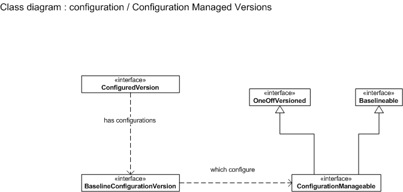

-
Interface Summary Interface Description _BaselineConfigurationMaster _BaselineConfigurationVersion _SerialNumbered _SerialNumberedInstanceIfc _SerialNumberedInstanceImpl _SerialNumberedInstanceVersion _TraceableLink BaselineConfigurationMaster An internal object which associates a version (BaselineConfigurationVersion) with the {@link ConfiguredMaster}.BaselineConfigurationVersion The configuration of aConfiguredMaster.Configuration A configuration defines versions of components that should be used in a structure.ConfigurationDelegate The configuration package defines the concept of a configuration and instances, but does not assert the definition of a structure.ConfigurationManageable An object that can be managed by aBaselineConfigurationVersion.ConfigurationService Provides an Application Programming Interface (API) for creating and editing configurations and instances, as well as for retrieving the information about these objects.ConfiguredMaster A configured object is a versioned object that is structured in some manner for which configurations that represent its structure can be stored.ConfiguredVersion A configured object is a versioned object that is structured in some manner for which configurations that represent its structure can be stored.SerialNumbered A serial numbered object is an object that can have serial numbered instances.SerialNumberedBaselineConfigurationVersion The configuration of aSerialNumberedConfiguredMaster.SerialNumberedComponentInstance Deprecated SerialNumberedComponentMaster Deprecated SerialNumberedComponentVersion Deprecated SerialNumberedConfiguredInstanceMaster An instance of aSerialNumberedConfiguredMaster.SerialNumberedConfiguredInstanceVersion An instance of aSerialNumberedConfiguredInstanceMasterwhich uses aSerialNumberedBaselineConfigurationVersionas its configuration.SerialNumberedConfiguredMaster A serial numbered object that has versioned instances which use aSerialNumberedBaselineConfigurationVersionas its configuration.SerialNumberedInstanceIfc The interface portion of a serial numbered instance (the implementation portion isSerialNumberedInstanceImpl.SerialNumberedInstanceImpl The implementation portion of a serial numbered instance.SerialNumberedInstanceMaster A serial numbered instance that is implemented using the master/version scheme.SerialNumberedInstanceVersion A version of an instance.TraceableLink A link with aTraceCode. -
Class Summary Class Description _BaselineConfigurationOverride _SerialNumberMapping _TraceCode BaselineConfigurationConfigSpec The config spec used by aBaselineConfigurationVersionto traverse its structure.BaselineConfigurationOverride This object stores an override of a given version in a configuration along the path specified by the path occurrence.ConfigurationHelper Provides access to theConfigurationServiceApplication Programming Interface (API) via the static referenceConfigurationHelper.serviceand several helper methods.ConfigurationVisitor AVisitorfor adding nodes of a structure to a configuration as it is navigated.RemoveConfigurationVisitor AVisitorfor removing nodes of a structure from a configuration as it is navigated.SerialNumberedConfiguredInstanceConfigSpec The config spec used bySerialNumberedConfiguredInstanceVersionobjects.SerialNumberMapping This object indicates the serial number of the serial numbered object used in the instance.StandardConfigurationService Use thenewStandardConfigurationServicestatic factory method(s), not theStandardConfigurationServiceconstructor, to construct instances of this class.TraceCode Indicates whether an object should be traced and how it should be traced when an instance of that object is created.
Package wt.configuration Description
The configuration package defines the concept of a configuration and instances. A configuration defines versions of components that should be used in a structure. An instance represents a traceable actualization of an object, i.e. each instance has a number (serial or lot) by which it can be identified.
This package provides the Application Programming Interface (API) for creating and editing configurations and instances, as well as for retrieving the information about these objects.
- Serial Numbered Objects
- Configured Objects
- Configuration Managed Versions
- Occurences
- Traceability
- Config Specs
- Visitor

